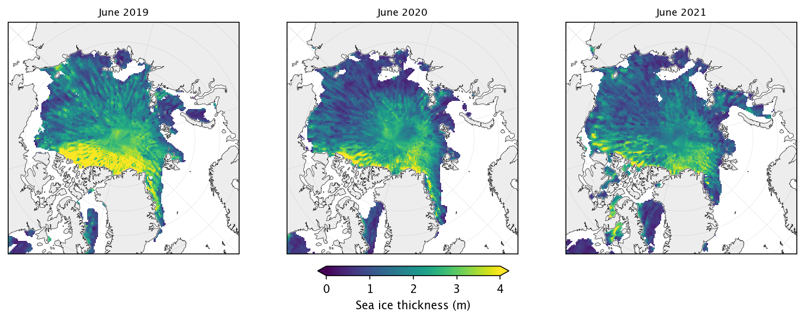
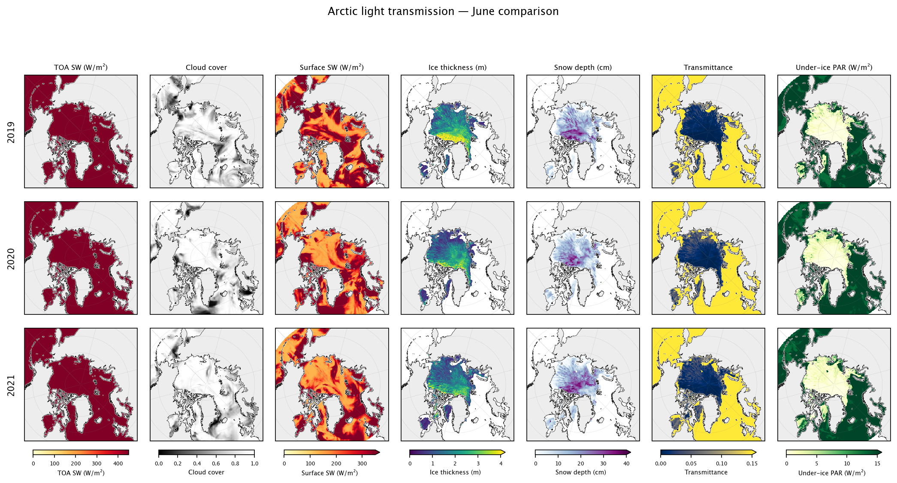
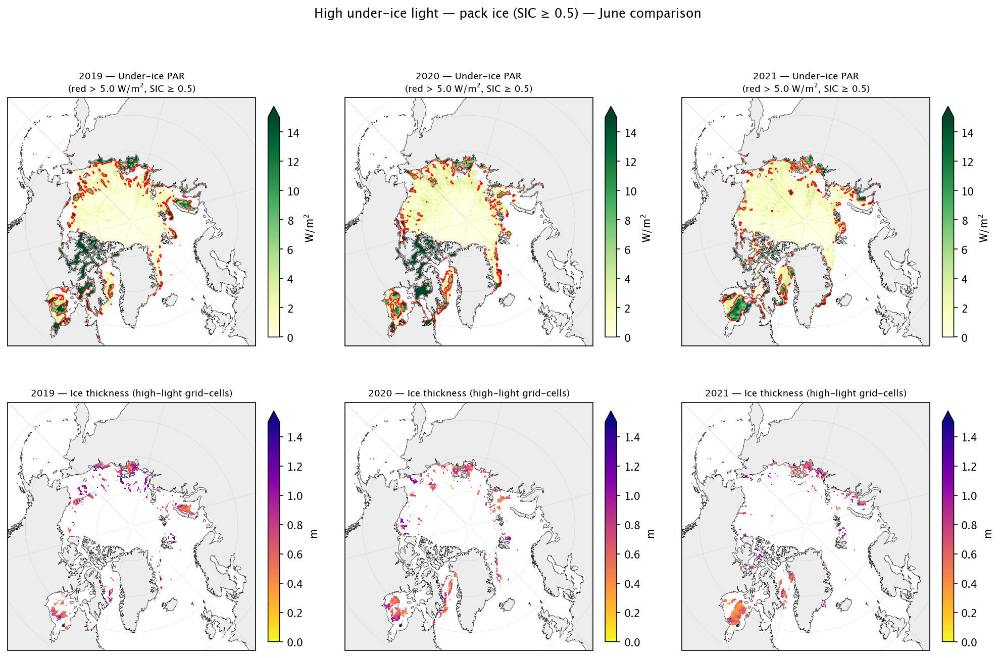

1. Gridded under-ice PAR estimation with ICESat-2/ERA5#
Goal: Combine ICESat-2 sea ice thickness and snow depth with ERA5 cloud cover to estimate under-ice light availability using a simple Beer-Lambert transmission model.
This notebook:
Reads ICESat-2 monthly gridded sea ice thickness and ancillary state data, from S3 (Zarr) — summer (IS2SIT_SUMMER, 2019–2021) by default
Reads ERA5 total cloud cover from the Earthmover catalog
Applies a two-layer (snow + ice) exponential light-decay model
Compares under-ice PAR across the three available summers for a chosen month (default: June)
Maps high-transmission regions and summarises year-to-year differences
Change ANALYSIS_MONTH in Section 1 to switch between May (5), June (6), or July (7).
Set SEASON = "winter" in Section 1 to load the winter dataset instead.
Setup and imports#
import numpy as np
import xarray as xr
import pandas as pd
import matplotlib.pyplot as plt
import matplotlib.gridspec as gridspec
import cartopy.crs as ccrs
import cartopy.feature as cfeature
from utils import (
read_is2sitmogr4_v4,
read_is2sit_summer,
read_era5_earthmover,
regrid_era5_to_is2,
daily_mean_toa_insolation,
add_arctic_features,
)
%matplotlib inline
plt.rcParams["figure.dpi"] = 150
plt.rcParams["font.size"] = 10
1. Read ICESat-2 sea ice thickness#
Two datasets are available on the same 25 km EASE2 grid:
Winter (IS2SITMOGR4 V4): Nov 2018 – Apr 2025
Summer (IS2SIT_SUMMER): May 2019 – Aug 2021
Set SEASON below to choose which one to load.
SEASON = "summer" # "winter" or "summer"
if SEASON == "winter":
is2_ds = read_is2sitmogr4_v4()
else:
is2_ds = read_is2sit_summer()
print(is2_ds.head())
<xarray.Dataset> Size: 16kB
Dimensions: (time: 5, y: 5, x: 5)
Coordinates:
* time (time) datetime64[ns] 40B 2019-05-01 ... ...
* y (y) float32 20B 5.838e+06 ... 5.738e+06
* x (x) float32 20B -3.838e+06 ... -3.738e+06
latitude (y, x) float32 100B 31.1 31.2 ... 32.08
longitude (y, x) float32 100B 168.3 168.1 ... 168.1
Data variables: (12/33)
crs (time) int32 20B dask.array<chunksize=(5,), meta=np.ndarray>
freeboard (time, y, x) float32 500B dask.array<chunksize=(3, 5, 5), meta=np.ndarray>
freeboard_int (time, y, x) float32 500B dask.array<chunksize=(3, 5, 5), meta=np.ndarray>
ice_density (time, y, x) float32 500B dask.array<chunksize=(3, 5, 5), meta=np.ndarray>
ice_density_j22 (time, y, x) float32 500B dask.array<chunksize=(3, 5, 5), meta=np.ndarray>
ice_thickness_sm_e5 (time, y, x) float32 500B dask.array<chunksize=(3, 5, 5), meta=np.ndarray>
... ...
snow_depth_sm_e5 (time, y, x) float32 500B dask.array<chunksize=(3, 5, 5), meta=np.ndarray>
snow_depth_sm_e5_int (time, y, x) float32 500B dask.array<chunksize=(3, 5, 5), meta=np.ndarray>
snow_depth_sm_m2 (time, y, x) float32 500B dask.array<chunksize=(3, 5, 5), meta=np.ndarray>
snow_depth_sm_m2_int (time, y, x) float32 500B dask.array<chunksize=(3, 5, 5), meta=np.ndarray>
snow_depth_w99r (time, y, x) float32 500B dask.array<chunksize=(3, 5, 5), meta=np.ndarray>
snow_depth_w99r_int (time, y, x) float32 500B dask.array<chunksize=(3, 5, 5), meta=np.ndarray>
Attributes:
contact: Alek Petty (akpetty@umd.edu)
description: Preliminary monthly gridded summer (May to August) Arctic s...
history: Created 23/07/25
ice_var = "ice_thickness_sm_m2_int"
snow_var = "snow_depth_sm_m2_int"
ANALYSIS_MONTH = 6 # 5 = May, 6 = June, 7 = July
YEARS = [2019, 2020, 2021]
DOY_MID = {5: 136, 6: 166, 7: 197} # ~15th of each month
SIC_MIN = 0.5 # pack-ice filter (no reliable thickness below this)
month_name = pd.Timestamp(2020, ANALYSIS_MONTH, 1).strftime("%B")
print(f"Analysis month: {month_name} | Years: {YEARS} | SIC filter: >{SIC_MIN}")
print(f"Available times in dataset: {[str(t)[:7] for t in is2_ds.time.values]}")
Analysis month: June | Years: [2019, 2020, 2021] | SIC filter: >0.5
Available times in dataset: ['2019-05', '2019-06', '2019-07', '2019-08', '2020-05', '2020-06', '2020-07', '2020-08', '2021-05', '2021-06', '2021-07', '2021-08']
1b. Quick-look maps for the selected month#
Spatial patterns of the chosen variable for each year.
Change plot_var to view other fields (e.g. snow_depth_sm_m2, sea_ice_conc, freeboard).
cmap = "viridis"
vmin, vmax = 0, 4
cbar_label = "Sea ice thickness (m)"
proj = ccrs.NorthPolarStereo(central_longitude=-45)
n = len(YEARS)
fig, axes = plt.subplots(
1, n, subplot_kw={"projection": proj}, figsize=(n * 3.5, 3.8),
)
if n == 1:
axes = [axes]
for idx, year in enumerate(YEARS):
ax = axes[idx]
ts = pd.Timestamp(year=year, month=ANALYSIS_MONTH, day=1)
if ts not in is2_ds.time.values:
ax.set_visible(False)
continue
data = is2_ds[ice_var].sel(time=ts)
im = data.plot(
ax=ax, x="longitude", y="latitude",
transform=ccrs.PlateCarree(),
cmap=cmap, vmin=vmin, vmax=vmax,
add_colorbar=False,
)
add_arctic_features(ax, extent=(-179, 179, 66, 90))
ax.set_title(f"{month_name} {year}", fontsize=9)
cbar = fig.colorbar(im, ax=axes, orientation="horizontal",
extend="both", fraction=0.04, pad=0.10)
cbar.set_label(cbar_label)
plt.subplots_adjust(left=0.02, right=0.98, top=0.93, bottom=0.18, wspace=0.05)
plt.show()

2. Read ERA5 cloud cover from Earthmover#
Access the ERA5 surface reanalysis from the
Earthmover Arraylake catalog.
We use total cloud cover (tcc, 0–1) to estimate cloud attenuation of incoming solar
radiation. The spatial group is optimized for map-style queries.
ds_era5 = read_era5_earthmover(group="spatial")
print("ERA5 variables:", list(ds_era5.data_vars))
print("Time range:", str(ds_era5.time.values[0])[:10], "to", str(ds_era5.time.values[-1])[:10])
2026-03-17T19:23:35.363687Z WARN aws_config::provider_config: failed to parse profile, err: could not parse profile file: error parsing /Users/akpetty/.aws/config on line 12:
Profile definition must end with ']' (ParseError(EnvConfigParseError { location: Location { line_number: 12, path: "/Users/akpetty/.aws/config" }, message: "Profile definition must end with ']'" }))
at /Users/runner/.cargo/registry/src/index.crates.io-1949cf8c6b5b557f/aws-config-1.8.12/src/provider_config.rs:295
ERA5 variables: ['blh', 'd2', 'lsp', 'sd', 'cp', 'skt', 'cape', 'mslp', 'sp', 'ssrd', 'stl1', 't2', 'ssr', 'sst', 'tcc', 'swvl1', 'tcwv', 'tcw', 'u10', 'u100', 'v100', 'v10']
Time range: 1975-01-01 to 2024-12-31
3. Variable selection & multi-year light transmission loop#
Using ANALYSIS_MONTH and YEARS set above, this section selects the IS2 ice/snow
variables, then loops over each year to fetch ERA5 cloud cover, regrid it, and run
the Beer-Lambert model.
sample = is2_ds.isel(time=0)
if ice_var not in sample.data_vars:
ice_var = next((v for v in sample.data_vars if "ice_thickness" in v and "_unc" not in v), ice_var)
if snow_var not in sample.data_vars:
snow_var = next((v for v in sample.data_vars if "snow_depth" in v and "_unc" not in v), snow_var)
print(f"Comparing {month_name} across {YEARS}")
print(f"Using ice thickness: '{ice_var}', snow depth: '{snow_var}'")
Comparing June across [2019, 2020, 2021]
Using ice thickness: 'ice_thickness_sm_m2_int', snow depth: 'snow_depth_sm_m2_int'
# ---- Albedo & surface transmittance per surface type ----
ALPHA_SNOW_ICE = 0.85 # snow-covered ice
ALPHA_BARE_ICE = 0.60 # bare white ice
ALPHA_POND = 0.25 # melt ponds
ALPHA_OCEAN = 0.06 # open water
I0_SNOW = 0.30 # surface scattering layer transmittance (snow-covered)
I0_BARE = 0.43 # bare ice
I0_POND = 0.60 # melt pond
# ---- Extinction coefficients ----
KAPPA_SNOW = 15.0 # m^-1
KAPPA_ICE = 1.5 # m^-1
# ---- Other parameters ----
F_PAR = 0.43 # broadband SW → PAR
SNOW_THRESH = 0.03 # m — below this, surface counts as bare / ponded
F_POND = 0.25 # assumed mean melt-pond fraction of ice area
DOY = DOY_MID[ANALYSIS_MONTH]
Q_toa = daily_mean_toa_insolation(is2_ds.latitude.values, DOY)
# ---- Loop over years: ERA5 fetch → regrid → Beer-Lambert ----
results = {}
for year in YEARS:
ts = pd.Timestamp(year=year, month=ANALYSIS_MONTH, day=1)
if ts not in is2_ds.time.values:
print(f" {ts:%Y-%m} — not in IS2 dataset, skipping")
continue
print(f" {ts:%Y-%m} ...", end=" ")
is2_snap = is2_ds.sel(time=ts)
era5_date = f"{year}-{ANALYSIS_MONTH:02d}-15"
tcc_era5 = (
ds_era5.tcc
.sel(time=slice(era5_date, era5_date), latitude=slice(90, 50))
.mean(dim="time")
.compute()
)
tcc = regrid_era5_to_is2(tcc_era5, is2_ds.latitude.values, is2_ds.longitude.values)
h_ice = is2_snap[ice_var].values
h_snow = is2_snap[snow_var].values
sic = is2_snap.sea_ice_conc.values
h_i = np.nan_to_num(h_ice, nan=0.0)
h_s = np.nan_to_num(h_snow, nan=0.0)
# Surface shortwave after cloud attenuation
Q_surf = Q_toa * (1.0 - 0.75 * np.power(np.clip(tcc, 0, 1), 3.4))
# --- Sub-area fractions within the ice-covered part ---
is_snow = h_snow > SNOW_THRESH
f_snow = np.where(is_snow, 1.0 - F_POND, 0.0)
f_pond = np.where(is_snow, F_POND, F_POND)
f_bare = 1.0 - f_snow - f_pond
# --- Transmittance for each surface type (albedo × Beer-Lambert) ---
T_snow = ((1 - ALPHA_SNOW_ICE) * I0_SNOW
* np.exp(-KAPPA_SNOW * h_s - KAPPA_ICE * h_i))
T_bare = (1 - ALPHA_BARE_ICE) * I0_BARE * np.exp(-KAPPA_ICE * h_i)
T_pond = (1 - ALPHA_POND) * I0_POND * np.exp(-KAPPA_ICE * h_i)
# Effective ice-area transmittance (weighted by sub-area fractions)
T_ice = f_snow * T_snow + f_bare * T_bare + f_pond * T_pond
T_ow = 1.0 - ALPHA_OCEAN
# Grid-cell PAR
par_ice = Q_surf * T_ice * F_PAR
par_ow = Q_surf * T_ow * F_PAR
par_gc = np.where(np.isfinite(sic),
sic * par_ice + (1.0 - sic) * par_ow, np.nan)
results[year] = dict(
h_ice=h_ice, h_snow=h_snow, sic=sic,
Q_toa=Q_toa, tcc=tcc, Q_surf=Q_surf,
T_snow=T_snow, T_bare=T_bare, T_pond=T_pond, T=T_ice,
f_snow=f_snow, f_bare=f_bare, f_pond=f_pond,
PAR_under_ice=par_ice, PAR_ocean=par_gc,
)
print(f"under-ice PAR median {np.nanmedian(par_ice):.1f} W/m²")
print(f"\nComputed light transmission for {len(results)} years.")
2019-06 ...
under-ice PAR median 29.6 W/m²
2020-06 ...
under-ice PAR median 32.4 W/m²
2021-06 ...
under-ice PAR median 32.3 W/m²
Computed light transmission for 3 years.
# (ERA5 regridding is now done inside the multi-year loop above)
4. Beer-Lambert light transmission model with albedo & melt ponds#
We estimate under-ice PAR (photosynthetically active radiation, 400–700 nm) through a multi-surface-type model. Each ice-covered grid cell is partitioned into three sub-areas weighted by their respective fractions:
where snow cover is diagnosed from the snow depth field (\(h_s > \) threshold → snow-covered).
Step 1 — Incoming surface shortwave $\(Q_{\text{surface}} = Q_{\text{TOA}} \;\bigl(1 - 0.75\,C_{\text{cloud}}^{\,3.4}\bigr)\)$
Step 2 — Transmittance for each surface type (Beer-Lambert)
Surface type |
Albedo \(\alpha\) |
Transmittance \(T\) |
|---|---|---|
Snow-covered ice |
\(\alpha_{\text{snow}}\) |
\((1-\alpha_{\text{snow}})\; i_{0,s}\; e^{-\kappa_s h_s - \kappa_i h_i}\) |
Bare ice |
\(\alpha_{\text{ice}}\) |
\((1-\alpha_{\text{ice}})\; i_{0,b}\; e^{-\kappa_i h_i}\) |
Melt pond |
\(\alpha_{\text{pond}}\) |
\((1-\alpha_{\text{pond}})\; i_{0,p}\; e^{-\kappa_i h_i}\) |
Open water |
\(\alpha_{\text{ow}}\) |
\((1-\alpha_{\text{ow}})\) |
Step 3 — Grid-cell under-ice PAR $\(\text{PAR}_{\text{gc}} = Q_{\text{surface}} \times f_{\text{PAR}} \times \Bigl[ \text{SIC}\bigl(f_s\,T_s + f_b\,T_b + f_p\,T_p\bigr) + (1-\text{SIC})(1-\alpha_{\text{ow}}) \Bigr]\)$
Parameter |
Symbol |
Value |
Reference |
|---|---|---|---|
Snow-covered ice albedo |
\(\alpha_{\text{snow}}\) |
0.85 |
Perovich et al. (2002) |
Bare ice albedo |
\(\alpha_{\text{ice}}\) |
0.60 |
Perovich et al. (2002) |
Melt pond albedo |
\(\alpha_{\text{pond}}\) |
0.25 |
Flocco et al. (2012) |
Open-water albedo |
\(\alpha_{\text{ow}}\) |
0.06 |
— |
Surface transmittance (snow-covered) |
\(i_{0,s}\) |
0.30 |
Light et al. (2008) |
Surface transmittance (bare ice) |
\(i_{0,b}\) |
0.43 |
Light et al. (2008) |
Surface transmittance (melt pond) |
\(i_{0,p}\) |
0.60 |
Light et al. (2015) |
Snow extinction |
\(\kappa_s\) |
15 m\(^{-1}\) |
Perovich (1996) |
Ice extinction |
\(\kappa_i\) |
1.5 m\(^{-1}\) |
Grenfell & Maykut (1977) |
PAR fraction of SW |
\(f_{\text{PAR}}\) |
0.43 |
Frouin & Pinker (1995) |
Mean melt pond fraction |
\(f_{\text{pond}}\) |
0.25 |
Rösel & Kaleschke (2012) |
# (Model computation is now done inside the multi-year loop above)
5. Compare inputs and outputs across years#
Each row is one year; columns show ice thickness, snow depth, cloud cover, surface shortwave, transmittance, and under-ice PAR.
proj = ccrs.NorthPolarStereo(central_longitude=-45)
transform = ccrs.PlateCarree()
lon2d = is2_ds.longitude.values
lat2d = is2_ds.latitude.values
col_specs = [
("Q_toa", "YlOrRd", 0, 450, "TOA SW (W/m²)", 1),
("tcc", "Greys_r", 0, 1, "Cloud cover", 1),
("Q_surf", "YlOrRd", 0, 350, "Surface SW (W/m²)", 1),
("h_ice", "viridis", 0, 4, "Ice thickness (m)", 1),
("h_snow", "BuPu", 0, 40, "Snow depth (cm)", 100),
("T", "cividis", 0, 0.15, "Transmittance", 1),
("PAR_under_ice", "YlGn", 0, 15, "Under-ice PAR (W/m²)", 1),
]
years_avail = sorted(results.keys())
nrows, ncols = len(years_avail), len(col_specs)
fig = plt.figure(figsize=(ncols * 2.5, nrows * 2.8 + 0.5))
gs = gridspec.GridSpec(nrows, ncols, wspace=0.05, hspace=0.12)
for ri, year in enumerate(years_avail):
r = results[year]
for ci, (key, cmap, vmin, vmax, label, scale) in enumerate(col_specs):
ax = fig.add_subplot(gs[ri, ci], projection=proj)
im = ax.pcolormesh(
lon2d, lat2d, r[key] * scale, transform=transform,
cmap=cmap, vmin=vmin, vmax=vmax,
)
add_arctic_features(ax)
if ri == 0:
ax.set_title(label, fontsize=8)
if ci == 0:
ax.text(-0.08, 0.5, str(year), transform=ax.transAxes,
fontsize=10, fontweight="bold", va="center", ha="right",
rotation=90)
for ci, (key, cmap, vmin, vmax, label, scale) in enumerate(col_specs):
extend = "neither" if key in ("tcc", "Q_toa") else "max"
ax_last = fig.axes[ci + (nrows - 1) * ncols]
cb = plt.colorbar(
ax_last.collections[0], ax=fig.axes[ci::ncols],
orientation="horizontal", shrink=0.8, pad=0.02, extend=extend,
)
cb.set_label(label, fontsize=7)
cb.ax.tick_params(labelsize=6)
fig.suptitle(f"Arctic light transmission — {month_name} comparison", fontsize=12, y=1.0)
plt.show()

6. Identify high-transmission regions across years (pack ice)#
We restrict this analysis to pack ice (SIC ≥ SIC_MIN, default 0.5) where
IS2 provides reliable thickness retrievals. Grid-cells where under-ice PAR exceeds
the threshold indicate areas where thin ice and/or low snow cover may allow
ecologically significant light levels beneath the ice.
Shown for each available year side-by-side. Adjust SIC_MIN in Section 1 to
change the pack-ice concentration threshold.
PAR_THRESHOLD = 5.0 # W/m²
years_avail = sorted(results.keys())
n = len(years_avail)
fig, axes = plt.subplots(
2, n, figsize=(n * 4.5, 9),
subplot_kw={"projection": proj},
)
if n == 1:
axes = axes.reshape(2, 1)
for ci, year in enumerate(years_avail):
r = results[year]
sic_y = r["sic"]
pack_mask = np.isfinite(sic_y) & (sic_y >= SIC_MIN)
high_light = (r["PAR_under_ice"] > PAR_THRESHOLD) & pack_mask
par_masked = np.where(pack_mask, r["PAR_under_ice"], np.nan)
ax = axes[0, ci]
im = ax.pcolormesh(
lon2d, lat2d, par_masked, transform=transform,
cmap="YlGn", vmin=0, vmax=15,
)
hl_float = high_light.astype(float)
mask_pos = lon2d >= 0
mask_neg = lon2d < 0
for mask in (mask_pos, mask_neg):
lon_m = np.where(mask, lon2d, np.nan)
dat_m = np.where(mask, hl_float, np.nan)
ax.contour(
lon_m, lat2d, dat_m,
levels=[0.5], colors="red", linewidths=0.8, transform=transform,
)
add_arctic_features(ax)
ax.set_title(f"{year} — Under-ice PAR\n(red > {PAR_THRESHOLD} W/m², SIC ≥ {SIC_MIN})", fontsize=9)
plt.colorbar(im, ax=ax, shrink=0.7, pad=0.04, extend="max", label="W/m²")
ax = axes[1, ci]
h_ice_hl = np.where(high_light, r["h_ice"], np.nan)
im = ax.pcolormesh(
lon2d, lat2d, h_ice_hl, transform=transform,
cmap="plasma_r", vmin=0, vmax=1.5,
)
add_arctic_features(ax)
ax.set_title(f"{year} — Ice thickness (high-light grid-cells)", fontsize=9)
plt.colorbar(im, ax=ax, shrink=0.7, pad=0.04, extend="max", label="m")
fig.suptitle(
f"High under-ice light — pack ice (SIC ≥ {SIC_MIN}) — {month_name} comparison",
fontsize=12, y=1.02,
)
plt.tight_layout()
plt.show()

7. Summary statistics — year-by-year comparison (pack ice, SIC ≥ SIC_MIN)#
rows = []
for year in sorted(results.keys()):
r = results[year]
pack_mask = np.isfinite(r["sic"]) & (r["sic"] >= SIC_MIN)
n_pack = np.sum(pack_mask)
high_light = (r["PAR_under_ice"] > PAR_THRESHOLD) & pack_mask
rows.append({
"Year": year,
"Grid-cells": int(n_pack),
"h_ice (m)": np.nanmean(r["h_ice"][pack_mask]),
"h_snow (cm)": np.nanmean(r["h_snow"][pack_mask]) * 100,
"TOA SW": np.nanmean(r["Q_toa"][pack_mask]),
"Cloud": np.nanmean(r["tcc"][pack_mask]),
"Sfc SW": np.nanmean(r["Q_surf"][pack_mask]),
"Trans.": np.nanmean(r["T"][pack_mask]),
"PAR (W/m²)": np.nanmean(r["PAR_under_ice"][pack_mask]),
f"PAR>{PAR_THRESHOLD} %": 100 * np.sum(high_light) / n_pack,
"h_ice HL (m)": np.nanmean(r["h_ice"][high_light]),
"h_snow HL (cm)": np.nanmean(r["h_snow"][high_light]) * 100,
})
summary_df = pd.DataFrame(rows).set_index("Year")
summary_df.style.format(precision=3)
| Grid-cells | h_ice (m) | h_snow (cm) | TOA SW | Cloud | Sfc SW | Trans. | PAR (W/m²) | PAR>5.0 % | h_ice HL (m) | h_snow HL (cm) | |
|---|---|---|---|---|---|---|---|---|---|---|---|
| Year | |||||||||||
| 2019 | 15046 | 1.991 | 13.656 | 521.968 | 0.820 | 281.260 | 0.055 | 6.578 | 26.605 | 0.788 | 5.168 |
| 2020 | 15073 | 1.561 | 11.991 | 521.425 | 0.854 | 247.557 | 0.059 | 7.721 | 26.823 | 0.707 | 4.724 |
| 2021 | 15382 | 1.527 | 13.301 | 521.290 | 0.895 | 222.152 | 0.049 | 5.439 | 22.143 | 0.670 | 5.119 |
Interpretation#
The table above reveals how the different drivers interact to control under-ice PAR across the three June snapshots (2019–2021):
Ice thickness is the dominant control. Mean pack-ice thickness dropped from ~2.0 m (2019) to ~1.5 m (2020–2021), a ~25 % thinning. Because light decays exponentially through ice, even modest thinning produces a large increase in transmittance — mean transmittance rose from 0.055 (2019) to 0.059 (2020) despite higher cloud cover in 2020. The mean thickness within high-transmission grid-cells (PAR > 5 W/m²) is substantially lower than the pack-ice average, confirming that thin ice is the primary gateway for under-ice light.
Snow depth has a secondary but important role. Snow is far more opaque than ice (κ_snow = 15 m⁻¹ vs κ_ice = 1.5 m⁻¹), so a few centimetres of difference matter. 2020 had the lowest mean snow depth (0.12 m vs 0.13–0.14 m in the other years), which contributed to its having the highest transmittance.
Cloud cover modulates the incoming energy budget. TOA insolation is essentially identical across years (~522 W/m²) since it depends only on latitude and day of year. Cloud cover, however, varied substantially: mean TCC increased from 0.82 (2019) to 0.90 (2021), reducing surface shortwave from ~281 to ~222 W/m². This ~21 % drop in surface SW between 2019 and 2021 directly scales the under-ice PAR, partially offsetting the effect of thinner ice in 2021.
Net effect on under-ice PAR. The interplay between these factors produces a non-obvious result: 2020 had the highest mean under-ice PAR (7.7 W/m²) because it combined thin ice and low snow with only moderately high cloud cover. By contrast, 2021 had comparable ice thickness but much higher cloud cover, yielding the lowest PAR (5.4 W/m²). The fraction of pack-ice grid-cells exceeding the 5 W/m² threshold ranged from ~22 % (2021) to ~27 % (2019–2020).
In summary, ice thickness and snow depth set the transmittance of the ice column, while cloud cover controls the amount of energy available to be transmitted. Both matter — a cloudy summer over thin ice can produce less under-ice light than a clearer summer over thicker ice.
Next steps#
This proof-of-concept compares under-ice light across three summers using explicit albedo and melt-pond assumptions. Potential improvements:
Spectral resolution: use wavelength-dependent extinction coefficients instead of broadband values
Spatially varying melt-pond fraction: replace the fixed
F_PONDwith satellite-derived pond fraction maps (e.g. MODIS)Full seasonal cycle: extend to May–August monthly evolution to capture the spring bloom window
Validation: compare modeled under-ice PAR against buoy-based observations (e.g. ice-tethered profilers)
Monthly ERA5 means: replace the single-day cloud cover with monthly averages for more robust estimates
Ice type: differentiate first-year vs. multi-year ice extinction properties and albedo
Trend analysis: quantify year-to-year changes in high-transmission area and mean under-ice PAR